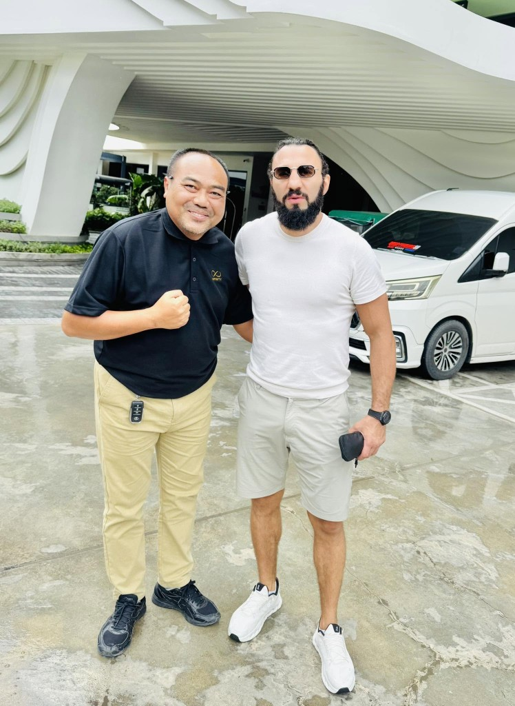
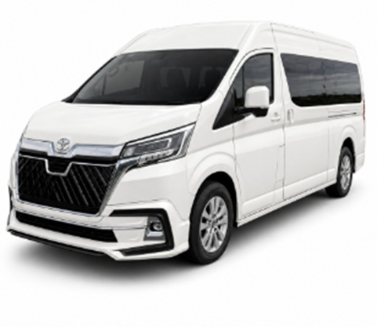

รับส่งสนามบิน
รับส่งสนามบินภูเก็ต 2026: คู่มือจองรถตู้ครบทุกขั้นตอน
คู่มือฉบับสมบูรณ์สำหรับ รับส่งสนามบินภูเก็ต (HKT) — ตั้งแต่เลือก รถตู้ภูเก็ต จุดรับผู้โดยสาร เปรียบเทียบตัวเลือก ราคาโดยโซน เคล็ดลับไฟลท์ดีเลย์ ไปจนถึงวิธีจอง รถรับส่งภูเก็ต กับ Infinity Transport Phuket
รับส่งสนามบินภูเก็ต คืออะไร และเหมาะกับใคร
Infinity Transport Phuket — คนขับมืออาชีพพร้อมรถตู้รับส่งสนามบินภูเก็ต
รับส่งสนามบินภูเก็ต คือบริการจองรถล่วงหน้า ให้คนขับรอรับที่สนามบินนานาชาติภูเก็ต (รหัส IATA: HKT ) แล้วพาคุณไปยังโรงแรม ที่พัก หรือจุดหมายในภูเก็ตโดยตรง โดยทั่วไปใช้ รถตู้ภูเก็ต SUV หรือรถ VIP พร้อมคนขับมืออาชีพ
บริการนี้เป็นส่วนหนึ่งของ รถรับส่งภูเก็ต ซึ่งครอบคลุมการเดินทางจากจุด A ไป B ทั่วเกาะ แต่การรับที่สนามบินมีรายละเอียดเฉพาะ เช่น จุดรับ Terminal การติดตามเที่ยวบิน และการถือป้ายชื่อ — บทความนี้รวบรวมทุกอย่างไว้ในที่เดียว
เหมาะกับ: ครอบครัวที่มีกระเป๋าเยอะ กลุ่มเพื่อน 3–16 คน ผู้ที่ลงเครื่องดึกหรือเช้ามาก นักท่องเที่ยวต่างชาติที่ต้องการความมั่นใจหลังลงเครื่อง และผู้ที่ไม่อยากต่อรองราคาแท็กซี่หน้างาน
ทำไมควรจองรถรับส่งสนามบินภูเก็ตล่วงหน้า
หลังลงเครื่องที่ HKT คุณมีหลายทางเลือก — แต่การจอง รถตู้พร้อมคนขับภูเก็ต ล่วงหน้ามักให้ประสบการณ์ที่ดีที่สุด โดยเฉพาะช่วงไฮซีซัน (พ.ย.–เม.ย.) และช่วงเทศกาลปีใหม่
รู้ราคาก่อนเดินทาง — ไม่ต้องต่อรองหน้างาน ดูราคาเริ่มต้นได้ที่ หน้าราคาและแพ็กเกจ มีคนรอรับชัดเจน — ถือป้ายชื่อ ช่วยขนสัมภาระ ไม่ต้องหาจุดจอดเองรองรับกลุ่มใหญ่ — รถตู้ 8–16 ที่นั่ง นั่งพร้อมกันได้ ไม่ต้องแยกรถติดตามเที่ยวบิน — แจ้งเลขไฟลท์ล่วงหน้า ทีมงานปรับเวลารับเมื่อไฟลท์ดีเลย์สะดวกกลางดึก — มีบริการรอบดึก ไม่ต้องกังวลเรื่องรถเมล์หมดเวลา
เปรียบเทียบ: รถตู้ vs แท็กซี่ vs Grab vs รถเมล์สนามบิน
ก่อนจอง ควรเข้าใจข้อดีข้อจำกัดของแต่ละตัวเลือก เพื่อเลือกให้เหมาะกับงบประมาณ จำนวนคน และความสะดวก
ตัวเลือก
ข้อดี
ข้อจำกัด
เหมาะกับ
รถตู้พร้อมคนขับ (จองล่วงหน้า) ราคาชัด ป้ายชื่อ รองรับกลุ่ม สัมภาระมาก ติดตามไฟลท์
ต้องจองล่วงหน้า
ครอบครัว กลุ่ม 4+ คน ไฟลท์ดึก
แท็กซี่หน้างาน
ไม่ต้องจอง มีรถตลอด
ราคาไม่แน่นอน อาจต่อรอง รถเล็กถ้าคนเยอะ
เดินทางคนเดียว 2 คน กระเป๋าน้อย
Grab / แอปเรียกรถ
ดูราคาในแอป สะดวก
รอคิวช่วงพีค รถอาจเล็ก บางครั้งยกเลิก
คู่รัก 2–3 คน กระเป๋าใบเดียว
รถเมล์ Airport Bus
ราคาถูก
จอดตามป้าย ไม่ถึงหน้าโรงแรม มีเวลาให้บริการ
นัก backpacking งบจำกัด
หากต้องการความสบายและความแน่นอนหลังลงเครื่อง การจอง รถรับส่งภูเก็ต แบบรถตู้พร้อมคนขับมักคุ้มค่าที่สุด โดยเฉพาะเมื่อเดินทาง 4 คนขึ้นไป — แบ่งค่ารถแล้วใกล้เคียงหรือถูกกว่าเรียกรถหลายคัน
จุดรับผู้โดยสารที่สนามบินภูเก็ต (Terminal 1 และ Terminal 2)

ทีมคนขับ Infinity Transport — พร้อมดูแลหลังรับจากสนามบิน
สนามบินนานาชาติภูเก็ต (HKT) มีอาคารผู้โดยสารหลัก 2 ส่วน:
Terminal 1 — ผู้โดยสารในประเทศ (Domestic)
รองรับเที่ยวบินภายในประเทศ เช่น กรุงเทพฯ–ภูเก็ต เชียงใหม่–ภูเก็ต หลังรับกระเป๋า คนขับจะรอถือป้ายชื่อบริเวณ Arrival Hall ด้านออก — แจ้งเลขเที่ยวบินและชื่อบนป้ายเมื่อจอง
Terminal 2 — ผู้โดยสารระหว่างประเทศ (International)
จุดรับยอดนิยมสำหรับนักท่องเที่ยวต่างชาติ หลังผ่านด่านตรวจคนเข้าเมืองและรับสัมภาระ คนขับจะรอที่ ประตูทางออก Arrivals พร้อมป้ายชื่อ — หากไม่เจอ สามารถโทรหมายเลขที่ยืนยันไว้ตอนจอง
บริการ Meet & Greet (ถือป้ายชื่อ)
เมื่อจองกับ Infinity Transport Phuket ให้ระบุ:
ชื่อ–นามสกุลบนป้าย (ภาษาอังกฤษหรือไทย)
เลขเที่ยวบิน (Flight number) เช่น TG 123, FD 3012
จำนวนผู้โดยสารและขนาดสัมภาระ (กระเป๋าใบใหญ่กี่ใบ)
ชื่อโรงแรมหรือที่พักปลายทาง
คนขับจะติดตามสถานะไฟลท์และรอรับแม้เครื่องล่าช้า (ภายในเงื่อนไขที่แจ้งตอนจอง) — สอบถามรายละเอียดได้ที่ หน้าติดต่อ
เลือกขนาดรถตู้สำหรับรับส่งสนามบินภูเก็ต

Toyota All New — รถตู้ภูเก็ตยอดนิยมสำหรับครอบครัวและกลุ่มเพื่อน
การเลือก รถตู้ ภูเก็ต ที่เหมาะสมขึ้นกับจำนวนผู้โดยสาร สัมภาระ และงบประมาณ ดูรายละเอียดรุ่นรถทั้งหมดได้ที่ หน้ารถทั้งหมด
ประเภทรถ
จำนวนที่นั่ง
เหมาะกับ
SUV / Sedan
3–4 ที่นั่ง
คู่รัก ครอบครัวเล็ก กระเป๋า 2–3 ใบ
Toyota All New Commuter
8–9 ที่นั่ง
ครอบครัว กลุ่มเพื่อน 6–8 คน สัมภาระปานกลาง
Toyota Alphard
4–6 ที่นั่ง (VIP)
งานธุรกิจ รับแขกสำคัญ ต้องการความหรู — ดู รถตู้ VIP ภูเก็ต
Mercedes-Benz Sprinter
10–16 ที่นั่ง
หมู่คณา ทัวร์กลุ่ม กระเป๋าเยอะ
เคล็ดลับ: หากมีกระเป๋าใบใหญ่ (Large suitcase) มากกว่า 1 ใบต่อคน แนะนำเลือกรถที่นั่งมากกว่าจำนวนคนจริง 1–2 ที่ เพื่อพื้นที่สัมภาระ — แจ้งทีมงานตอนจองเพื่อจัดรถที่เหมาะสม
ระยะเวลาเดินทางและราคารับส่งสนามบินภูเก็ตโดยโซน
ราคา รับส่งสนามบินภูเก็ต ขึ้นกับโซนปลายทาง ประเภทรถ และช่วงเวลา โดยทั่วไปแพ็กเกจ Airport Transfer เริ่มต้น 1,000 บาทต่อเที่ยว (รวมคนขับและค่าน้ำมันในเขตภูเก็ต) — ตรวจสอบราคาล่าสุดที่ หน้าราคาและแพ็กเกจ
โซนปลายทาง
ระยะเวลาโดยประมาณ*
หมายเหตุ
ตัวเมืองภูเก็ต / โรงแรมใกล้เมือง
30–40 นาที
ใกล้สนามบินที่สุดในรายการ
บางโป / ตลิ่งชัน / กมลา
35–50 นาที
ทางฝั่งตะวันตก ใกล้เมือง
ป่าตอง (Patong)
45–60 นาที
โซนยอดนิยม ช่วงเย็นอาจติดรถ
กะตะ / กะรน / ไก่ใน
50–70 นาที
ทางฝั่งตะวันตกเฉียงใต้
ราไวย์ / นิสไท / แหลมพรหมเทพ
55–75 นาที
ปลายเกาะฝั่งใต้
ฉลอง / วิชิต / ราเวียง
40–55 นาที
ฝั่งตะวันออก
อ่าวปอ / บางเทา / Laguna
25–40 นาที
ฝั่งตะวันออกเหนือ ใกล้สนามบิน
* ระยะเวลาเป็นการประมาณ ไม่รวมช่วงรถติดหรือสภาพอากาศเลวร้าย ราคาเส้นทางเฉพาะขอใบเสนอราคาที่ หน้าจอง
หลังถึงโรงแรมแล้ว หากต้องการเที่ยวต่อในวันเดียวกัน สามารถเปลี่ยนเป็นแพ็กเกจ รถตู้นำเที่ยวภูเก็ต (เหมารายวัน) ได้ — แจ้งทีมงานล่วงหน้าเพื่อวางแผนเส้นทาง
วิธีจองรับส่งสนามบินภูเก็ต — 5 ขั้นตอน
ระบุวันที่และเวลาเครื่องลง — แจ้งเลขเที่ยวบิน (Flight number) เพื่อให้ทีมติดตามสถานะเลือกประเภทรถ — ตามจำนวนคนและสัมภาระ ดูตัวเลือกที่ หน้ารถทั้งหมด แจ้งจุดรับและปลายทาง — Terminal (Domestic/International) และชื่อโรงแรม/ที่พักส่งรายละเอียดจอง — ผ่าน แบบฟอร์มติดต่อ LINE หรือโทร 062 664 4542 (24 ชม.)ยืนยันราคาและรับข้อมูลคนขับ — ได้ชื่อ เบอร์โทร และจุดนัดพบก่อนวันเดินทาง
แนะนำจองล่วงหน้า อย่างน้อย 1–3 วัน ช่วงไฮซีซน (พ.ย.–เม.ย.) และช่วงเทศกาลปีใหม่ควรจอง 1–2 สัปดาห์ ล่วงหน้า
เคล็ดลับสำคัญ: ไฟลท์ดีเลย์ ไฟลท์ดึก และเที่ยวขากลับ
ไฟลท์ดีเลย์ — ต้องทำอย่างไร
แจ้งเลขเที่ยวบินตอนจอง ทีมงานจะติดตามสถานะและปรับเวลารอรับให้ หากดีเลย์นานผิดปกติ โทรแจ้งคนขับหรือทีมงานได้ทันที — ไม่ต้องกังวลว่ารถจะหายไปก่อน
ไฟลท์ดึก / รอบเช้ามาก
Infinity Transport Phuket ให้บริการ ตลอด 24 ชั่วโมง รวมรอบเที่ยวบินดึกและเช้ามาก การจองล่วงหน้าช่วยให้มั่นใจว่ามีรถรอรับ แม้ช่วงที่ Grab หรือแท็กซี่หายาก
เที่ยวขากลับ (โรงแรม → สนามบิน)
จองรับส่งขากลับพร้อมขาไปได้ในครั้งเดียว แจ้งเวลา pick-up จากโรงแรม (แนะนำออกก่อนเวลาเครื่องอย่างน้อย 3–4 ชม. สำหรับเที่ยวบินระหว่างประเทศ) ดูแนวทางเพิ่มที่ คู่มือรถรับส่งภูเก็ต
เด็กเล็กและคาร์ซีท
หากมีเด็กเล็ก แจ้งอายุและจำนวนล่วงหน้าเพื่อจัดเตรียมคาร์ซีท (subject to availability) — ระบุในแบบฟอร์ม หน้าจอง
ทำไมควรจองรับส่งสนามบินกับ Infinity Transport Phuket
ตรงเวลา — ติดตามเที่ยวบิน รอรับแม้ไฟลท์ล่าช้า (ตามเงื่อนไขที่แจ้ง)คนขับมืออาชีพ — สุภาพ คุ้นเส้นทางทุกโซนในภูเก็ตรถสะอาด ปรับอากาศ — ดูแลสภาพรถก่อนทุกงานราคาโปร่งใส — เริ่มต้น 1,000 บาท/เที่ยว ดูรายละเอียดที่ หน้าราคา รีวิวจริงจาก Google — ดูที่ หน้ารีวิวลูกค้า ตอบไว 24 ชม. — จองผ่าน LINE / โทร / แบบฟอร์มได้ตลอด
Phuket airport transfer — book in advance
Infinity Transport Phuket offers reliable Phuket airport transfer with professional drivers, name-sign meet & greet, and a fleet from SUV to VIP van and Mercedes Sprinter. Whether you need a van in Phuket for a family group or a premium Phuket transfer to Patong, Kata, or Rawai, we provide fixed quotes before you land.
Book your Phuket airport pickup via our contact page , LINE, or phone. See also our van with driver Phuket guide and Phuket transfer overview .
Book Phuket airport transfer
จองรับส่งสนามบินภูเก็ต
กลับไปหน้าบทความทั้งหมด
ดูคู่มือที่เกี่ยวข้อง: รถรับส่งภูเก็ต , รถตู้พร้อมคนขับภูเก็ต , รถตู้นำเที่ยวภูเก็ต
คำถามที่พบบ่อย (FAQ) รับส่งสนามบินภูเก็ต
รับส่งสนามบินภูเก็ต ราคาเท่าไหร่?
แพ็กเกจ Airport Transfer เริ่มต้น 1,000 บาทต่อเที่ยว (รวมคนขับและค่าน้ำมันในเขตภูเก็ต) ราคาขึ้นกับโซนปลายทางและประเภทรถ — ดูรายละเอียดที่ หน้าราคา หรือขอใบเสนอราคาที่ หน้าติดต่อ
คนขับรอที่ไหนหลังลงเครื่อง?
รอถือป้ายชื่อที่ Arrival Hall หลังรับสัมภาระ — แยกจุดตาม Terminal (Domestic หรือ International) แจ้งเลขเที่ยวบินและชื่อบนป้ายตอนจอง
ไฟลท์ดีเลย์ คนขับจะรอไหม?
ได้ครับ แจ้งเลขเที่ยวบินตอนจอง ทีมงานติดตามสถานะและปรับเวลารับให้ หากดีเลย์นานผิดปกติ โทรแจ้งคนขับหรือทีมงานได้
รถตู้ภูเก็ต รับได้กี่คน?
ขึ้นกับรุ่น — SUV 3–4 คน, Toyota All New 8–9 คน, Sprinter 10–16 คน ดูรายละเอียดที่ หน้ารถทั้งหมด
จองล่วงหน้ากี่วัน?
แนะนำอย่างน้อย 1–3 วัน ช่วงไฮซีซน (พ.ย.–เม.ย.) ควรจอง 1–2 สัปดาห์ล่วงหน้า
ราคารวมค่าทางด่วนไหม?
แพ็กเกจทั่วไปรวมค่าน้ำมันในเขตภูเก็ต ค่าทางด่วน (ถ้ามี) แจ้งแยกตอนยืนยันราคา — ดูเงื่อนไขที่ หน้าราคา
มีบริการรอบดึกไหม?
มีครับ ให้บริการตลอด 24 ชั่วโมง รวมไฟลท์ดึกและเช้ามาก
จองขาไปและขากลับพร้อมกันได้ไหม?
ได้ครับ แจ้งวันเวลา pick-up จากโรงแรมสำหรับเที่ยวขากลับตอนจอง จะได้ราคารวมชัดเจน
รับส่งสนามบิน vs รถรับส่งภูเก็ต ต่างกันไหม?
รับส่งสนามบินเป็นเคสเฉพาะของรถรับส่งภูเก็ต ที่จุดเริ่มหรือปลายทางเป็นสนามบิน HKT — บริการใช้รถและคนขับชุดเดียวกัน
มีคาร์ซีทสำหรับเด็กไหม?
แจ้งอายุและจำนวนเด็กล่วงหน้า ทีมงานจัดเตรียมให้ตามความพร้อม — ระบุใน แบบฟอร์มจอง
Infinity Transport Phuket อยู่ที่ไหน?
ให้บริการรถพร้อมคนขับทั่วภูเก็ต จองออนไลน์ได้ที่ หน้าติดต่อ หรือค้นหา Infinity Transport Phuket บน Google Maps